Naturalne soki z Makowskiego Sadu
Odkryj wyjątkowe walory tłoczonych soków jabłkowych z ekologicznego sadu w Małopolsce

Tradycja i pasja
Jesteśmy niewielkim, rodzinnym przedsięwzięciem z urokliwego Makowa Podhalańskiego. Zajmujemy się tworzeniem naturalnych soków jabłkowych, z pasją oraz troską o środowisko.
Soki Jabłkowe
W Pudełku lub same worki 3L.
- Przydatność do spożycia przez co najmniej 5 dni po otwarciu
- Mniej materiałów na opakowanie
- Łatwe przechowywanie i nalewanie
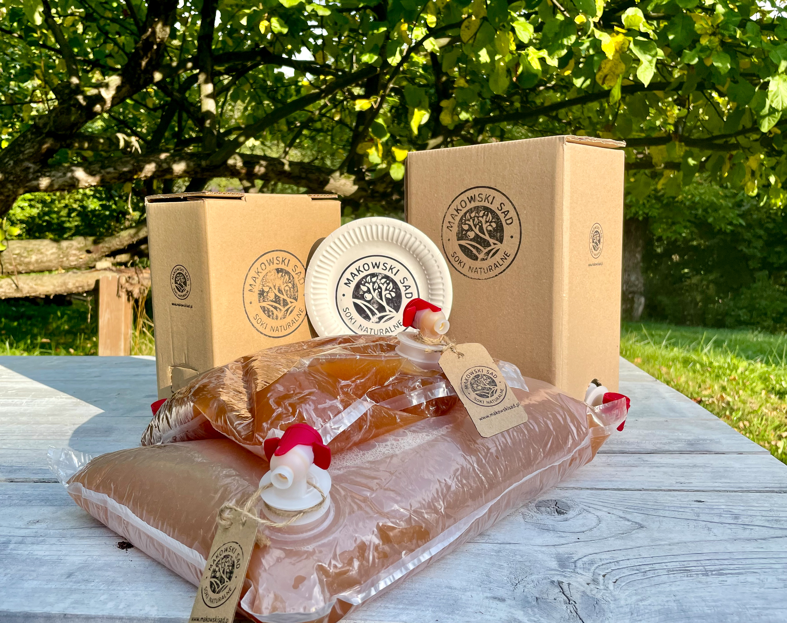
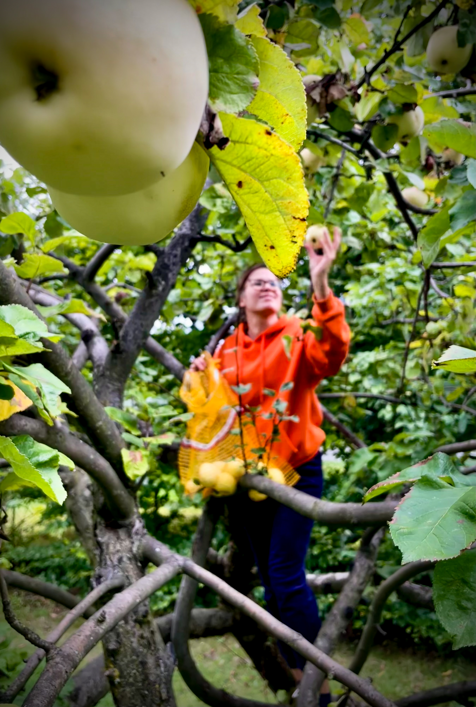
Jakość soków
Starannie zbieramy i selekcjonujemy jabłka, tylko najlepsze trafiają do naszych soków.
- Nie stosujemy oprysków, środków ochronnych ani sztucznych nawozów
- 100% naturalne składniki
- Bez dodatku cukru i konserwantów
Wyselekcjonowane jabłka transpotrujemy do "Tłoczni Choczni" pod Wadowicami. Ta profesjonalna tłocznia jest wyposażona w nowoczesne urządzenia, które zapewniają precyzję, skuteczność procesu tłoczenia i dbałość o środowisko naturalne.
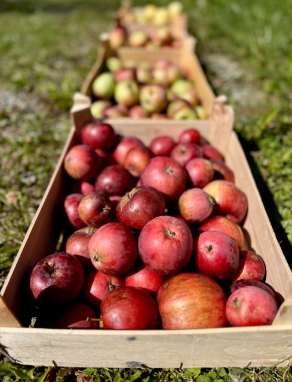
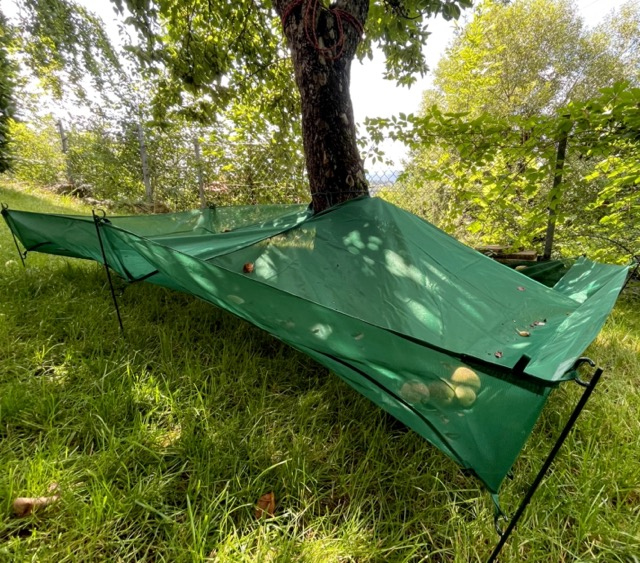
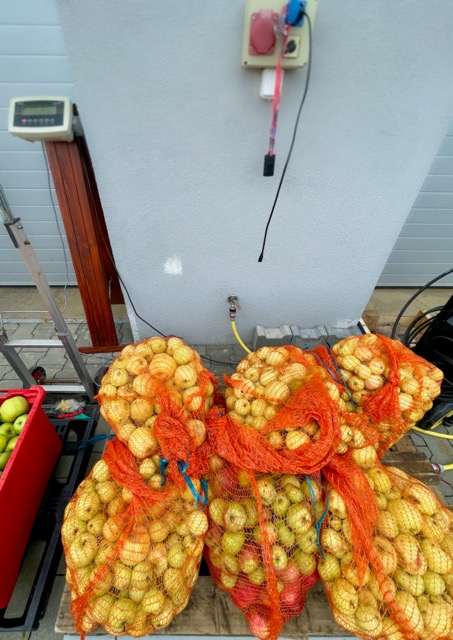
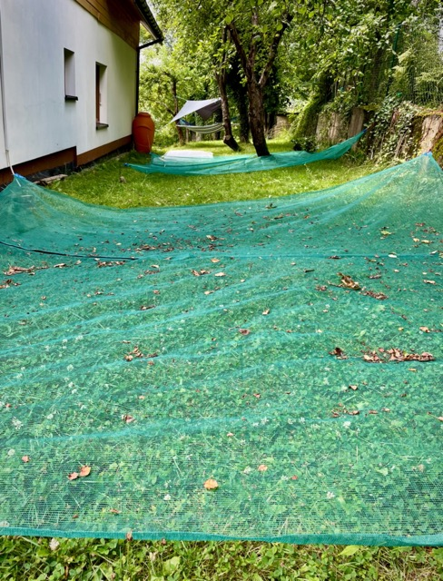
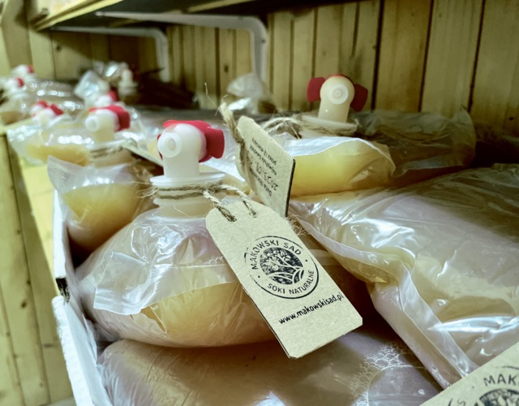
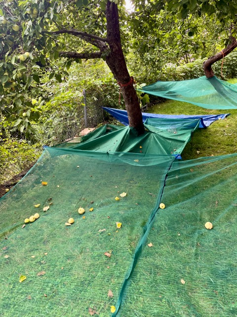
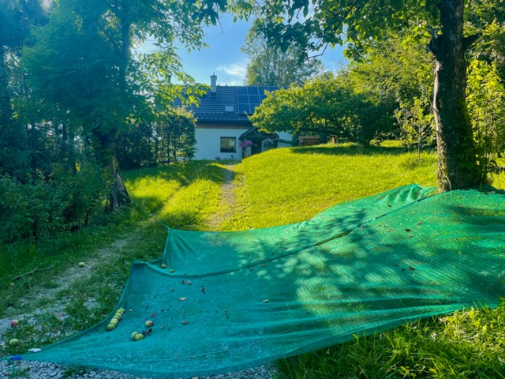
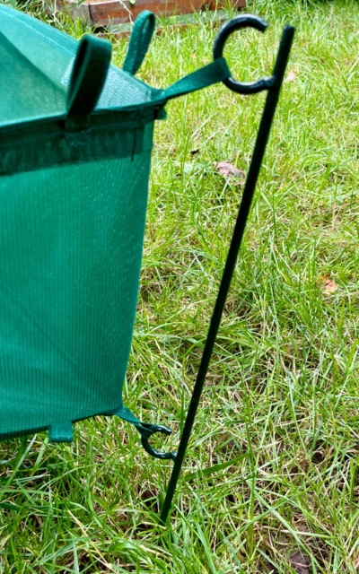
Produkujemy rocznie około 300 litrów wysokiej jakości soków jabłkowych.
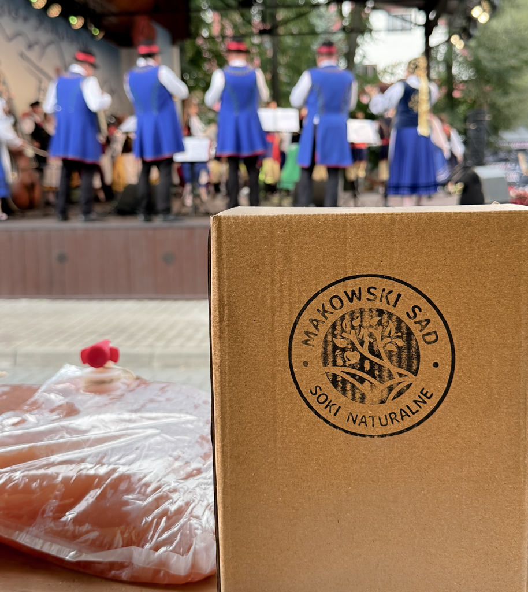
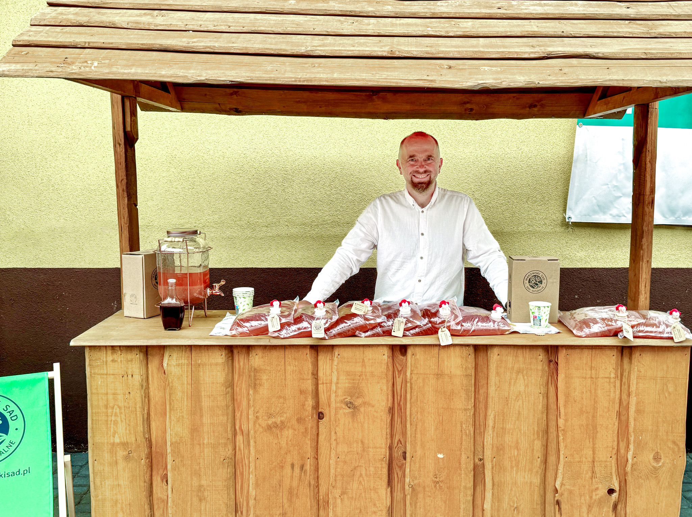
Chętnie obsługujemy imprezy lokalne.